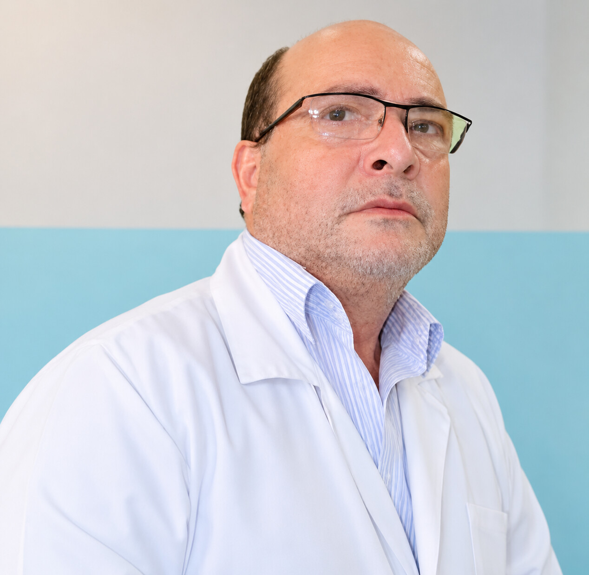
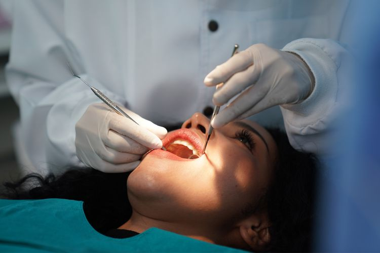
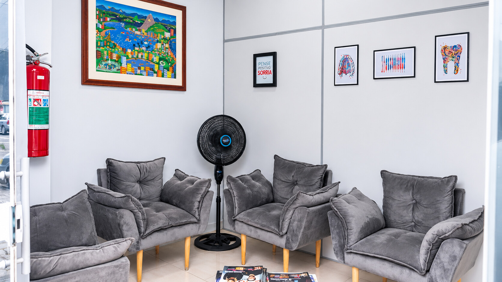
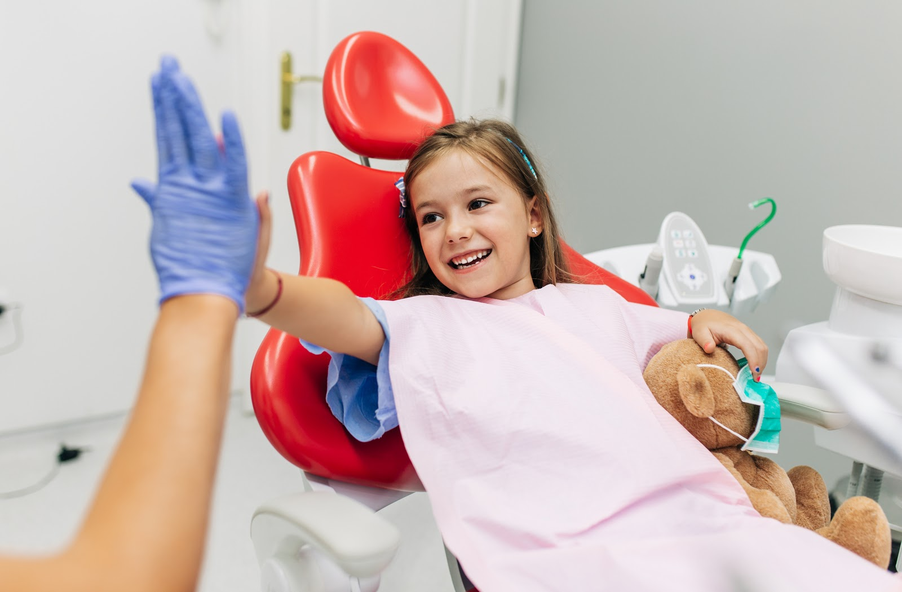
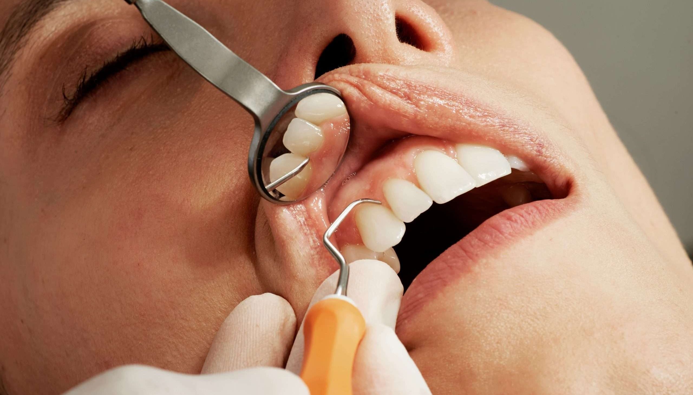
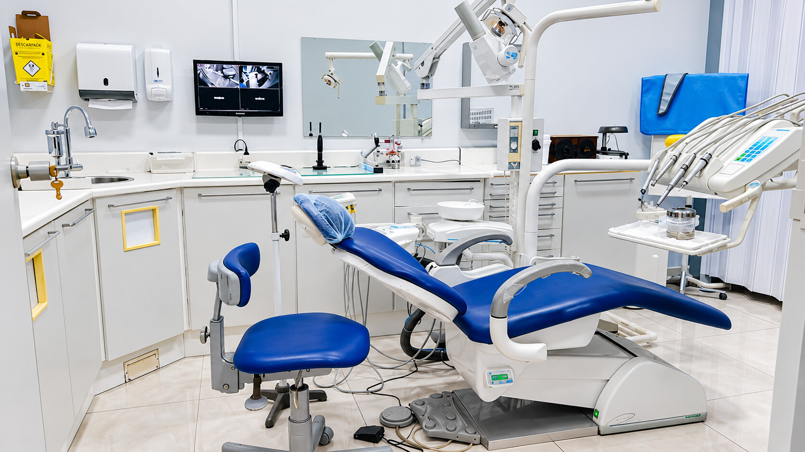
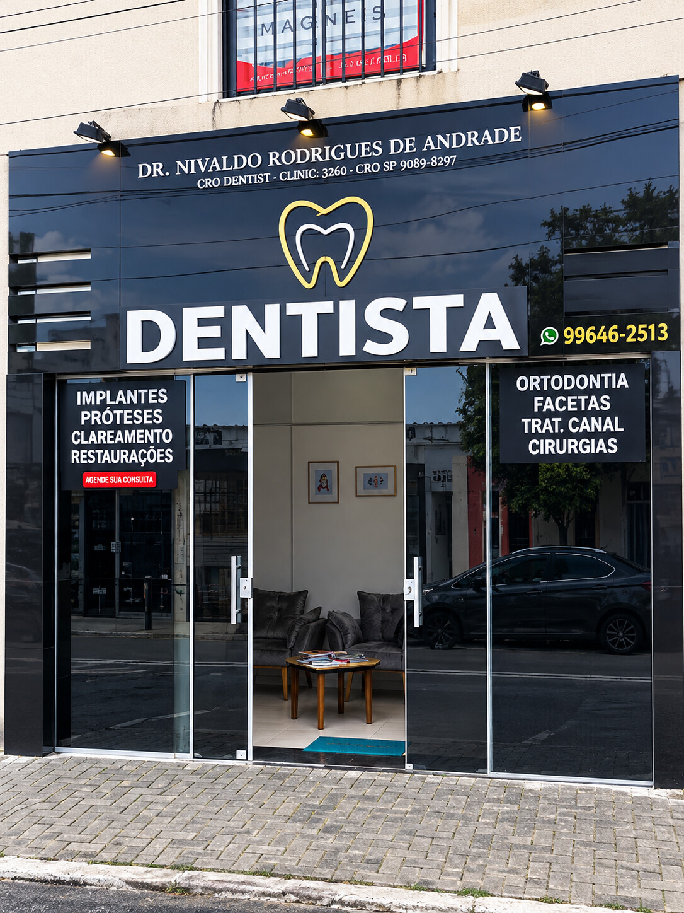
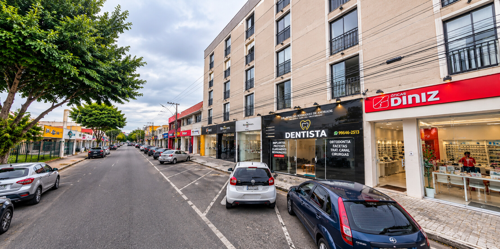

Implantes dentários
Reposição de dentes perdidos com implantes, recuperando a mastigação, a estética e o conforto no dia a dia. É a especialidade do Dr. Nivaldo.
Saiba maisDr. Nivaldo R. Andrade · CRO-SP 20996
Dentista em Arujá, especialista em implantes dentários, com atendimento de consultório há mais de 33 anos e tecnologia de ponta.


O Dr. Nivaldo R. Andrade (CRO-SP 20996) é dentista em Arujá há 35 anos, com mais de 33 anos de atendimento em consultório. É especialista em implantes dentários e acumula mais de 50 cursos de atualização odontológica.
No consultório odontológico em Arujá, a tradição de quem conhece a comunidade se une à tecnologia de ponta, para um atendimento cuidadoso e claro em cada etapa do tratamento.
Implantes dentários, clareamento dental e outros procedimentos, sempre com avaliação clínica e explicação clara de cada etapa.
Reposição de dentes perdidos com implantes, recuperando a mastigação, a estética e o conforto no dia a dia. É a especialidade do Dr. Nivaldo.
Saiba maisClareamento com indicação e acompanhamento profissional, para suavizar o tom dos dentes respeitando a saúde do esmalte e da gengiva.
Saiba maisCuidado com a gengiva e os tecidos que sustentam os dentes, ajudando a tratar inflamações e a manter a saúde bucal por mais tempo.
Saiba maisProcedimentos para corrigir alterações da gengiva, tanto por saúde quanto pela harmonia do sorriso, com planejamento individual.
Saiba maisRecuperação de dentes fraturados, desgastados ou com cárie, com materiais da cor do dente para um resultado natural.
Saiba maisRemoção de dentes que não conseguiram nascer, com avaliação prévia e técnica cuidadosa para um pós-operatório mais tranquilo.
Saiba maisReabilitação de dentes ausentes ou muito comprometidos com próteses, devolvendo função, fala e equilíbrio ao sorriso.
Saiba maisRemoção do dente do siso quando indicada, ajudando a prevenir dor, infecções e problemas nos dentes vizinhos.
Saiba maisConheça o consultório e o atendimento do Dr. Nivaldo R. Andrade.

IMG/img1.jpg
IMG/img2.jpg
IMG/img3.jpg
IMG/img4.jpg
IMG/img5.jpg
IMG/img6.jpgTradição e atuação em Arujá.
Foco em reabilitação com implantes dentários.
Atendimento com recursos modernos.
Atualização odontológica constante.
Depoimentos ilustrativos de pacientes fictícios, não são avaliações reais.
Eu tinha pavor de dentista. Saí da primeira consulta querendo voltar.
Fui muito bem orientado sobre o tratamento e me senti seguro em todas as etapas.
Fui atendida com atenção e tudo foi explicado com clareza, do início ao fim.
Ligue para (11) 4652-2957 e o consultório orienta você sobre o agendamento.
R. Prudente de Moraes, nº 8 – Centro, Arujá – SP.
Ele é especialista em implantes dentários, com 35 anos de experiência em Arujá e mais de 50 cursos de atualização odontológica.
Cada caso exige uma avaliação clínica. Durante a consulta, o Dr. Nivaldo analisa sua situação e explica as opções com clareza.
Ligue para (11) 4652-2957 e agende sua consulta em Arujá.
Agende sua consulta